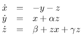
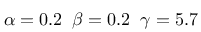
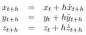
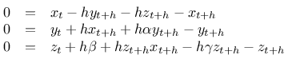
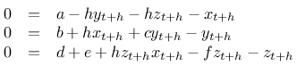

Nachdem ich so viel Spaß bei der Untersuchung der Behandlung eines chaotischen Systems mittels impliziten Eulerverfahrens hatte, habe ich mir gleich noch eines vorgenommen...
Der Rössler-Attractor stellt sich wie folgt dar:

mit
Daraus folgt für die Behandlung mit dem impliziten Eulerverfahren und einer Schrittweite (oder Intervallänge) h:
und eingesetzt:
Und wegen der Übersichtlichkeit:
Löst man dieses Gleichungssystem - und ich gebe zu, dass ich mich außerstande sah und Hilfe bei SymPy gesucht habe - kommt man auf ein Ergebnis für die Berechnung der drei Zustandsgrößen, das auf der Konsole - direkt von SymPy - wie folgt aussieht:
from sympy import *
>>> from sympy import *
>>> x, y, z,a,b,c,d,e,f,h = symbols('x, y, z,a,b,c,d,e,f,h')
>>> linsolve([a-h*y-h*z-x,b+h*x+c*y-y,d+e+h*z*x-f*z-z],(x,y,z))
{((h*(c - 1)*(h**2*z*(a*h + b) - (-c + h**2 + 1)*(a*h*z + d + e)) +
(a*(-c + h**2 + 1) - h*(a*h + b))*(h**4*z -
(-c + h**2 + 1)*(f + h**2*z - h*x + 1)))/((h**4*z -
(-c + h**2 + 1)*(f + h**2*z - h*x + 1))*(-c + h**2 + 1)),
(a*f*h - a*h**2*x + a*h + b*f + b*h**2*z - b*h*x + b -
d*h**2 - e*h**2)/(-c*f - c*h**2*z + c*h*x - c + f*h**2 + f -
h**3*x + h**2*z + h**2 - h*x + 1), (h**2*z*(a*h + b) -
(-c + h**2 + 1)*(a*h*z + d + e))/(h**4*z -
(-c + h**2 + 1)*(f + h**2*z - h*x + 1)))}
>>>
Eindrucksvoll und dennoch verwirrend - daher habe ich es hier nochmal aufbereitet:
![\begin{matrix}x_{t+h}&=&{{h(c - 1)(h^2z_t(ah + b) - (-c + h^2 + 1)(ahz_t + d + e)) + (a(-c + h^2 + 1) - h(ah + b))(h^2z_t - (-c + h^2 + 1)(f + h^2z_t - hx_t + 1))}\over{(h^4z_t - (-c + h^2 + 1)(f + h^2z_t - hx_t + 1))(-c + h^2 + 1)}}\hfill\cr y_{t+h}&=&{{afh - ah^2x_t + ah + bf + bh^2z_t - bhx_t + b - dh^2 - eh^2}\over{-cf - ch^2z_t + chx_t - c + fh^2 + f - h^3x_t + h^2z_t + h^2 - hx_t + 1)}}\hfill\cr z_{t+h}&=&{{h^2z_t(ah + b) - (-c + h^2 + 1)(ahz_t + d + e)}\over{(h^4z_t - (-c + h^2 + 1)(f + h^2z_t - hx_t + 1))}}\hfill\end{matrix}](images/tex/-357309466.png "\begin{matrix}x_{t+h}&=&{{h(c - 1)(h^2z_t(ah + b) - (-c + h^2 + 1)(ahz_t + d + e)) + (a(-c + h^2 + 1) - h(ah + b))(h^2z_t - (-c + h^2 + 1)(f + h^2z_t - hx_t + 1))}\over{(h^4z_t - (-c + h^2 + 1)(f + h^2z_t - hx_t + 1))(-c + h^2 + 1)}}\hfill\cr y_{t+h}&=&{{afh - ah^2x_t + ah + bf + bh^2z_t - bhx_t + b - dh^2 - eh^2}\over{-cf - ch^2z_t + chx_t - c + fh^2 + f - h^3x_t + h^2z_t + h^2 - hx_t + 1)}}\hfill\cr z_{t+h}&=&{{h^2z_t(ah + b) - (-c + h^2 + 1)(ahz_t + d + e)}\over{(h^4z_t - (-c + h^2 + 1)(f + h^2z_t - hx_t + 1))}}\hfill\end{matrix}")
Die hier gezeigten Darstellung veranschaulichen den Vorteil des impliziten Eulerverfahrens noch einmal schön: Als Referenz habe ich den Rösslerattractor mit einem adaptiven, expliziten Cash-Karp-Solver bis zu t=100 berechnet. Das benötigte 10000 Schritte - damit war die optimale durchschnittliche Schrittweite mit h=0.03 ermittelt.
Daraufhin berechnete ich zunächst das System mit dem expliziten Eulerverfahren und unterschiedlichen Schrittweiten bis zu t=30. Die Darstellungen zeigen die Änderungen im Ergebnis für h= 0.03, h=0.04 und h=0.05. Man kann erkennen, dass bereits bei h=0.04 eine Degeneration einsetzt (die Spiralfeder) und schließlich bei h=0.05 schließlich keine Lösung mehr ermittelt werden kann.
Die beiden letzten Bild stellen das Ergebnis des impliziten Verfahrens mit einer Schrittweite von h=0.04 und h=0.05 dar - in beiden sieht man, dass die beim expliziten Verfahren mit h=0.04 beobachtete Degeneration auch hier vorliegt, allerdings wird auch deutlich, dass die Lösung qualitativ noch sehr nahe am Original liegt. Damit ist einmal mehr bewiesen, dass man sich für die numerische Lösung von Differentialgleichungssystemen der Mühe unterziehen sollte, das implizite Eulerverfahren zumindest in Betracht zu ziehen.


Tags


Neueste Artikel
-
 Alarmierung über Skripte
Alarmierung über Skripte
Nachdem ich mich in letzter Zeit wieder verstärkt mit den Themen Monitoring und Alarmierung auseinandersetze, habe ich überlegt, ob ich die dabei gewonnenen Erkenntnisse nicht auch dazu nutzen könnte, die bestehende Lösung flexibler zu machen
Weiterlesen... -
 EBCMS
EBCMS
Ich habe nach einer Möglichkeit gesucht, meine eigene Webseite zu gestalten. Nach einiger Überlegung und ein paar Versuchen mußte ich feststellen, daß ich mich mit keiner der ausprobierten Varianten glücklich fühlte - also ran ans Zeichenbrett und was eigenes geschaffen!
Weiterlesen... -
Synchronisieren Zwischenablage mit XPRA
Nachdem ich neulich mein XPRA-Skript nochmal ein wenig erneuert habe, hatte ich ein Problem:
Weiterlesen...
Manche nennen es Blog, manche Web-Seite - ich schreibe hier hin und wieder über meine Erlebnisse, Rückschläge und Erleuchtungen bei meinen Hobbies.
Wer daran teilhaben und eventuell sogar davon profitieren möchte, muß damit leben, daß ich hin und wieder kleine Ausflüge in Bereiche mache, die nichts mit IT, Administration oder Softwareentwicklung zu tun haben.
Ich wünsche allen Lesern viel Spaß und hin und wieder einen kleinen AHA!-Effekt...
PS: Meine öffentlichen GitHub-Repositories findet man hier.